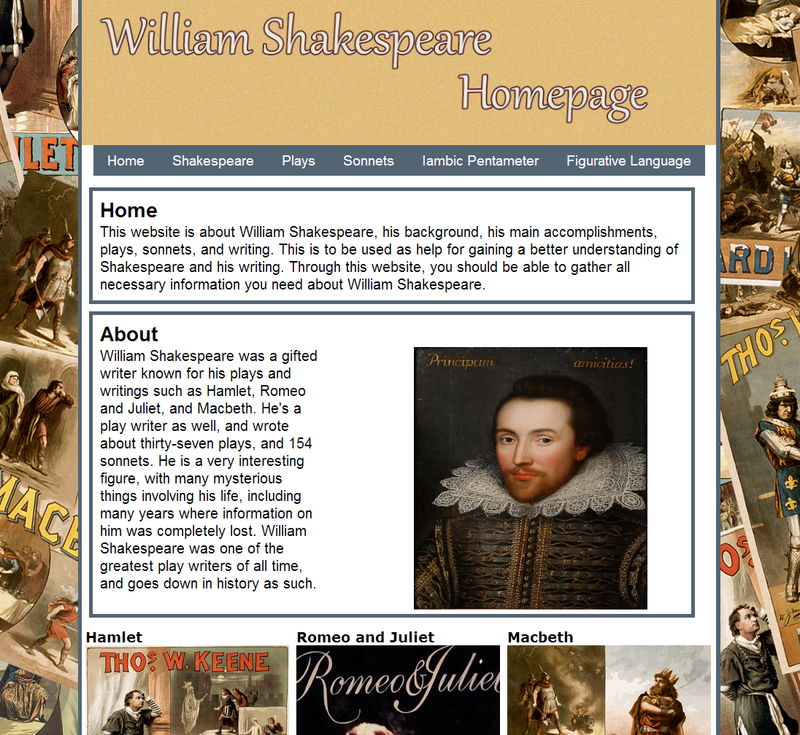
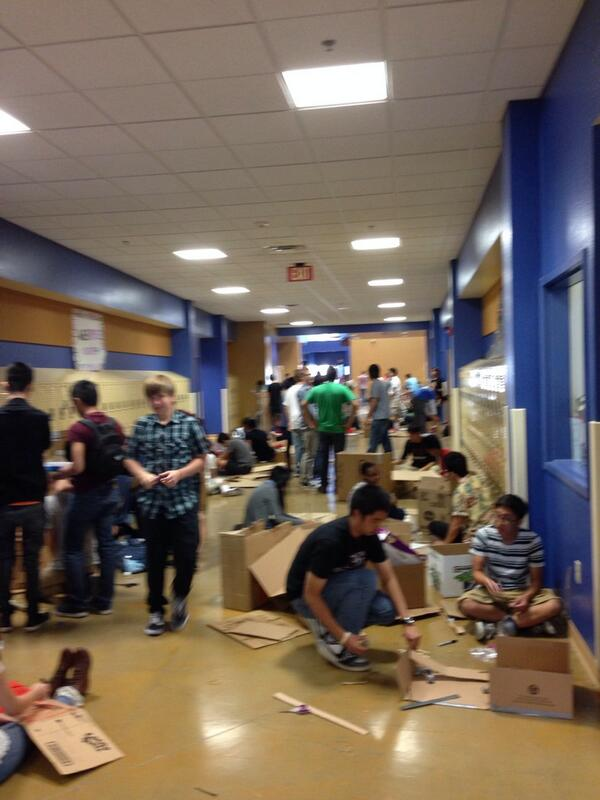
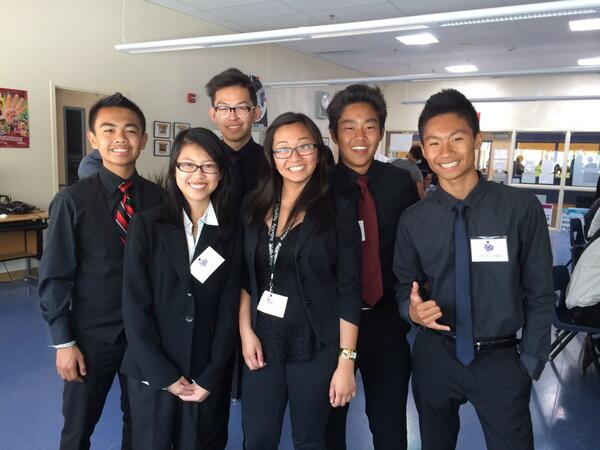
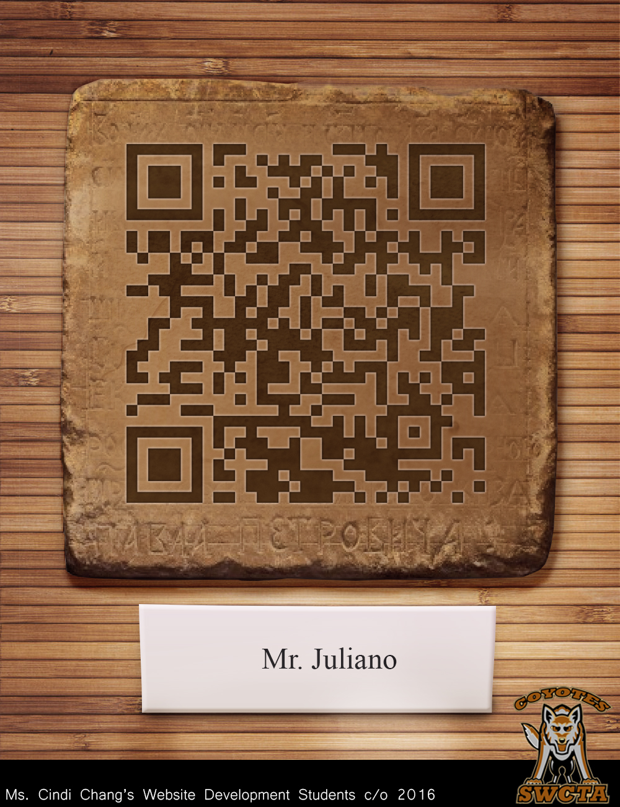
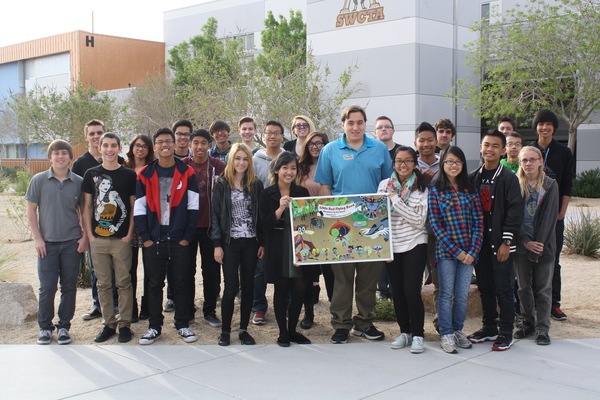
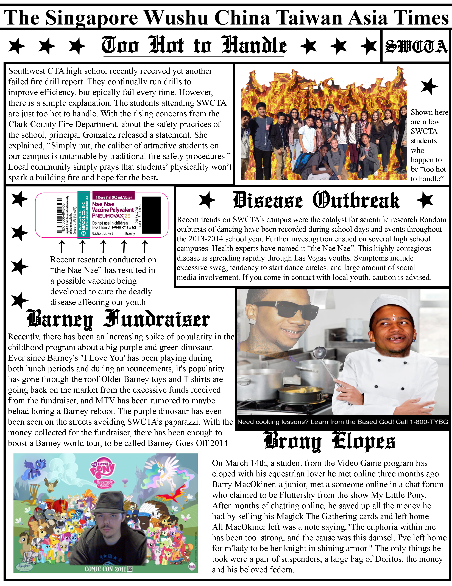

ISAAC LANDIS
10TH GRADE
Content Knowledge
Shakespeare Website
Project Date: May 2014
Class: Web Design
About:
The Shakespeare website project was a project to test everything that we have learned over the course of our tenth grade year in Web Design. We had to create a website from scratch all about William Shakespeare. The website was for the tenth grade English teacher who needed a website that would be a directory for all the information he would need to show his upcoming students. We had about two weeks to work on it, and we had to research and find all the content and information, which we then had to style, with specific requirements needing to be met. After we coded and styled our websites to our liking, we had to submit them to our teacher Ms. Chang, and then present it in front of the classroom the day it was due. The English teacher, Ms. Chang, and senior Web Design students were there to comment on our websites and choose which one.
Reflection:
I liked this project in some ways, but mostly I wasn't a big fan of it, because I made it that way. The hardest part for me was probably putting in all the information and all the HTML coding, while the styling was much easier. I individually researched for all the information off of multiple sources to ensure accuracy, and that took a few days to accomplish. When it came down to the end of the project, I made the mistake of not submitting the project on time. I was supposed to submit it to my teacher the night before it was due, but I made a mistake and didn't submit until the morning of, and I take full blame for it. Because of this mistake, no one else could bring up the website on their screen, only the website which I brought on my USB that was being shown on the main screen. It taught me a huge lesson about getting forgetful, and to always stay on top of things, or else there will be consequences.
Work Ethic
Fall PBL
Project Date: October 2013
Class Name: Web Design
About:
For Fall PBL, all students in each grade were sorted by which program area they were in such as Web Design or Automotive, and then grouped together. Each group consisted of mostly one freshman, one sophomore, one junior and one senior. These groups would work together to create arcade machines within a set size using only cardboard and other materials like so, a lot like "Caine's Arcade". Each program area then set up their machines in their respective hallways and people were allowed to come by and view and play them afterwards.
Reflection:
This project was pretty hard, and required lots of mental and physical work. We didn't have lots of materials to use, and had to cut all the cardboard with scissors, which is really difficult to do. The other hard part was thinking of what arcade machine to do, but that soon got figured out and we went with a little catapult shooting marbles at different holes for different points. My group actually had two freshman which I was grateful for, because our senior didn't help out much, but it ended up turning out good in the end.
Presentation Skills
Girls In Tech
Project Date: April 2014
Class Name: Web Design
About:
For this project, it was a part of our Spring PBL and involved the Web Design students grades 10-12, Video Game students grades 10-12, and some Fashion Design students. The purpose of the project was to introduce middle school girls to technology and the uses and fun that it actually is so that they're more convinced to come to our school, and be a part of the technology world like web designing or video game designing. We split up into groups in each grade, and for my class, we were split up into groups of six, with two girls as the leaders of each group. Each group was then assigned a part of technology to introduce the girls to. My group did our project on stop motion using an app on the iPads and iPhones called Stop Motion Studio. During the three days of Spring PBL, each group would take turns presenting in front of the girls in a workshop fashion, with rotations happening and usually presenting three times in total, and having a break period.
Reflection:
I liked this project when it came to the concept and what we actually had to do, but when it came down to what we actually were doing on the days of the project, it was very hectic and difficult. First of all, the schedule was a bit unorganized and a lot of people were clueless to what was going on, and the first day was the worst. We had no breaks the first day, and while other groups were allowed to order food and eat, we were working the whole time with no time for meals. It was a difficult thing to go through, but we all persevered through it and came out more prepared for the next days. The next few days were a lot easier, and I had fun the whole time, the first taste of working together with all the other web design students.
Use of Resources
QR Code Project
Project Date: September 2013
Class Name: Web Design
About:
For the QR code project, we got into groups of five people to create QR codes for teachers around the school. Each group was assigned a few teachers, and required to ask them what they wanted to be on their QR codes and where they wanted them to be put. My group was assigned Mr. Ball, the computers teacher, Mr. Juliano, the world history teacher, and both hall monitors Ms. Mary and Ms. Michelle. We had to customize the QR codes to look in theme with the teacher and their class, and each QR code would be able to be scanned and bring up the resource that the teacher wanted to appear.
Reflection:
This project was actually one that I liked a bit. I liked that we had to get into groups and use teamwork to make the project work, and then got to learn about what QR codes really are and how they work. We used the internet, photoshop, and teachers around the school to make it all work, and it was pretty fun. I really liked being able to go out and interview the teachers specific questions about their roles and what they wanted new students incoming to their classes to know. I really liked how nice our QR codes looked and came out, while still being able to work and be scanned.
Teamwork/Collaboration
Ben's Book
Project Date: December 2013
Class Name: Animation I
About:
For this project, the sophomore Web and Video Game students worked with a student at Foothill High School named Ben. Ben is a student with autism but an amazing talent for art, and even wrote and illustrated a book named Little Red Flying Hood which was published and being sold. To increase publicity and to help out, our classes animated the book in Adobe Flash with each student getting a page, and overall combining all the animated pages with voice acting to create an animated movie.
Reflection:
This project was a great experience and probably one of my favorites. The opportunity to help out an aspiring artist get known to people out there, and bring his art and story to life in front of his eyes in every way he wanted, and how much he enjoys it, is a great feeling. It was a long process that ended up lasting around four months or so, but I felt ended up being worth it. There were lots of issues, but after a long time of fixing, it ended up looking great and was even shown as a premiere at a high school in Las Vegas, and that was incredible. It got stressful at times when it came to the work and mistakes and some mixups, but overall it turned out very nicely.
Writing Skills
Satirical Newspaper
Project Date: March 2014
Class Name: English 9 Honors
About:
For this project, the class was split up into groups of four where we all worked together to create a satirical newspaper making fun of actual ones to work on satirical writing. For this project, my group and I worked together to find and create pictures and advertisements which were all needed in our newspaper, and then we all wrote out a set number of articles per person. After all this was done, we put it on a Google document, which I then brought into photoshop and made to look like a newspaper.
Reflection:
This project was a lot of fun and it actually didn't even feel like it was work at all. We were allowed to choose our own groups, and then got to make fun of the school and things in it, which was lots of fun since there were no real boundaries besides staying away from getting too offensive. I created the majority of the pictures, and wrote out all the information in photoshop, and put the pictures and organized them all together, and it was just a great experience. There was lots of writing which got tiring and tedious, but in the end I feel like it came out to look really nice and the writing was well written as well.